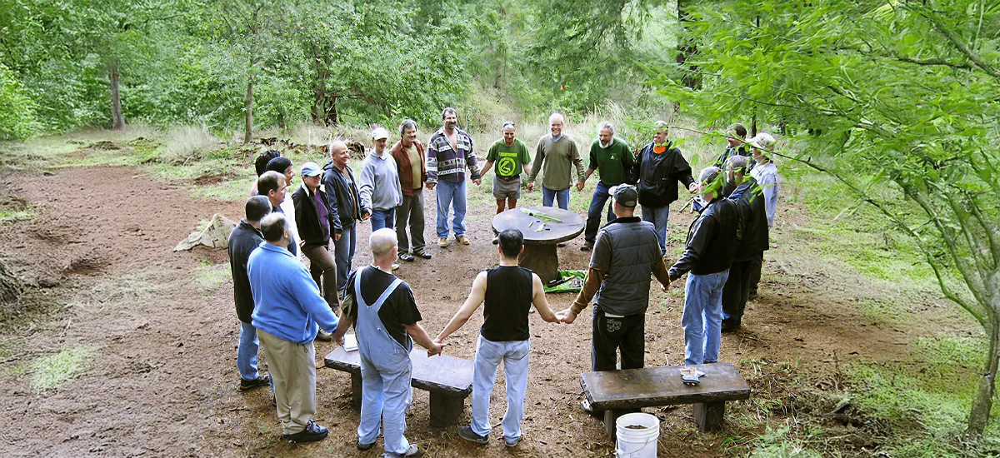
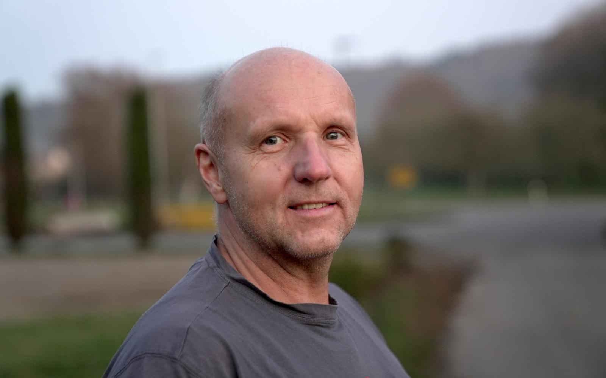
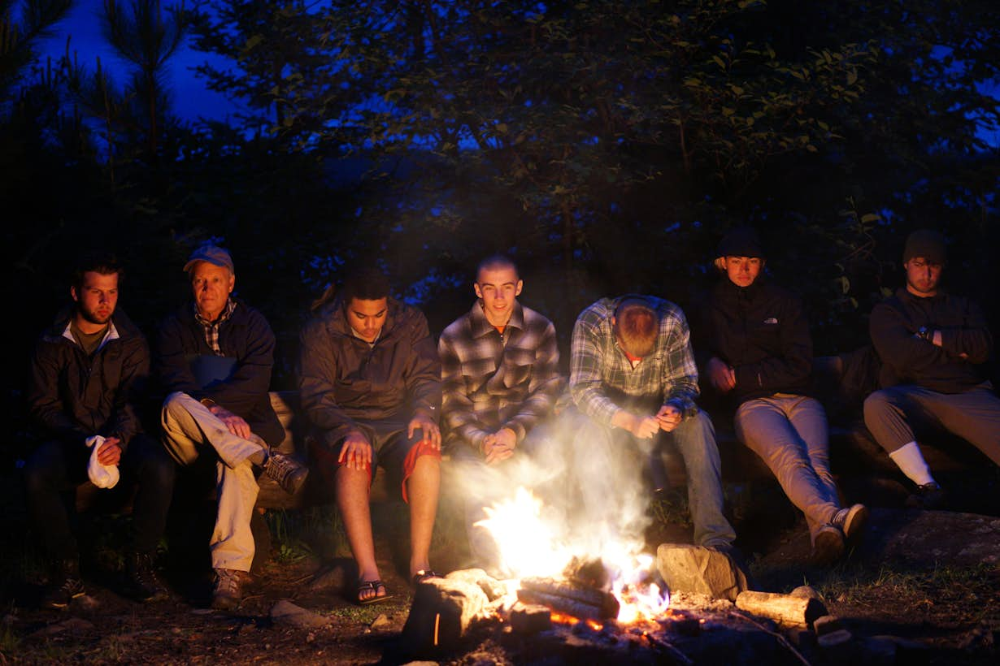

Ein geschützter Raum für Männer, die mehr wollen als Funktionieren. Ehrlicher Austausch. Echte Verbindung. Persönliches Wachstum.
Kennst du das?
Als Partner, Vater, Chef, Freund – du funktionierst. Aber wann bist du zuletzt einfach du selbst gewesen?
Oberflächliche Gespräche über Fußball und Arbeit – aber niemand, dem du wirklich sagst, wie es dir geht.
Stress, Druck, Erschöpfung. Das innere Feuer brennt kaum noch. Du weißt, da müsste mehr sein.
Du hast gelernt, stark zu sein und zu schweigen. Aber dieser Panzer kostet dich jeden Tag Energie.

Was ist der Männerkreis?
Der Männerkreis Vestenbergsgreuth ist eine regelmäßige Zusammenkunft von Männern aus Vestenbergsgreuth und Umgebung. In einem vertraulichen Rahmen sprechen wir über das, worüber Männer sonst selten reden.
„Was im Kreis besprochen wird, bleibt im Kreis. Hier gilt: Kein Urteil. Kein Rat, wenn er nicht gefragt ist. Nur echtes Zuhören und ehrliches Begegnen."
Geleitet von Andreas Böhm, einem erfahrenen Therapeuten und Begleiter, bietet der Männerkreis Vestenbergsgreuth einen professionell geführten Raum für persönliches Wachstum, echte Verbindung und die Stärkung deiner Männlichkeit.
Was du bekommst
Männerfreundschaften, die über die Oberfläche gehen. Männer, die dich kennen und halten – ohne Urteile.
Raus aus dem Autopiloten. Rein in das Erleben. Deine Gefühle, deine Stärke, deine Lebendigkeit.
Über Beziehungen, Vaterschaft, Beruf, Sinn, Ängste und Träume – in einem Raum, der das hält.
Durch den Spiegel anderer Männer erkennst du deine blinden Flecken und findest neue Perspektiven.
Die Energie eines ausgerichteten Männerkreises ist spürbar. Du gehst gestärkt nach Hause.
Begrenzende Glaubenssätze loslassen. Deine Potenziale entfalten. Der Mann werden, der du sein willst.

Dein Ansprechpartner
Therapeut & Leiter des Männerkreises Vestenbergsgreuth
Als Therapeut und Begleiter begleite ich Männer seit vielen Jahren auf ihrem Weg zu mehr Authentizität, Stärke und innerer Freiheit. Ich kenne die Themen, die Männer bewegen – aus meiner eigenen Reise und der Arbeit in meiner Praxis: einfachgesundsein.com
Der Männerkreis Vestenbergsgreuth ist mein Herzensanliegen: Ein Ort, an dem Männer aus unserer Region zusammenkommen können, um sich wirklich zu begegnen. Nicht als Funktionsträger, sondern als Menschen. Als Männer.
Ich freue mich auf dich – auf deine Fragen, deine Geschichte und dein Interesse, Teil dieses Kreises zu werden.
Wie es funktioniert
Vestenbergsgreuth und Umgebung (Uehlfeld, Neustadt, Höchstadt und Schlüsselfeld). Der genaue Treffpunkt wird nach Anmeldung mitgeteilt.
Alle 14 Tage – regelmäßig und verlässlich. Termine werden gemeinsam abgestimmt.
Jedes Treffen dauert 2–3 Stunden. Genug Zeit für echte Tiefe, ohne den Abend zu sprengen.
Kleine, überschaubare Gruppe für maximale Vertraulichkeit und echten Kontakt.
Was im Kreis gesprochen wird, bleibt im Kreis. Absolute Diskretion ist Grundlage unserer Arbeit.
20 € Unkostenbeitrag pro Treffen.

Häufige Fragen
Nein, absolut nicht. Der Männerkreis ist offen für alle Männer – egal ob du zum ersten Mal von Männerarbeit hörst oder schon Erfahrung mitbringst. Das Einzige, was du brauchst, ist echtes Interesse und die Bereitschaft, dich zu öffnen.
Nein. Nein, der Männerkreis ist keine Therapie und hat kein therapeutisches Setting. Es ist ein Raum für persönliches Wachstum, echten Austausch und männliche Gemeinschaft. Geleitet wird er von Andreas Böhm, der als Therapeut einen professionellen und sicheren Rahmen schafft.
Jedes Treffen hat eine eigene Energie. In der Regel gibt es ein Check-in (wie geht es mir gerade?), einen thematischen Impuls oder eine Übung, offenen Austausch und einen Check-out. Manchmal wird gesprochen, manchmal wird geschwiegen, manchmal gelacht. Es ist lebendig und echt.
Du schreibst Andreas eine kurze Nachricht über das Formular oder per E-Mail. Er meldet sich dann persönlich bei dir, um in einem kurzen Gespräch herauszufinden, ob der Männerkreis zu dir passt. Kein Druck, keine Verpflichtung.
Regelmäßigkeit ist wichtig für die Tiefe des Kreises. Gleichzeitig verstehen wir, dass das Leben manchmal dazwischenkommt. Das Wichtigste ist die Bereitschaft, sich einzubringen und verlässlich zu sein.
Für Männer jeden Alters aus Vestenbergsgreuth und Umgebung (Uehlfeld, Neustadt, Höchstadt, Schlüsselfeld), die ehrlich mit sich und anderen sein wollen. Männer, die mehr wollen als Oberflächlichkeit. Männer, die bereit sind, sich zu zeigen – mit Stärken und Schwächen.
Jetzt Kontakt aufnehmen
Du musst nicht sicher sein, ob der Männerkreis das Richtige für dich ist. Schreibe mir einfach eine kurze Nachricht – ich antworte persönlich und wir schauen gemeinsam, ob es passt. Ohne Druck. Ohne Verpflichtung.
Andreas Böhm wird sich persönlich bei dir melden. Wir freuen uns auf dich.
Ich melde mich persönlich bei dir.